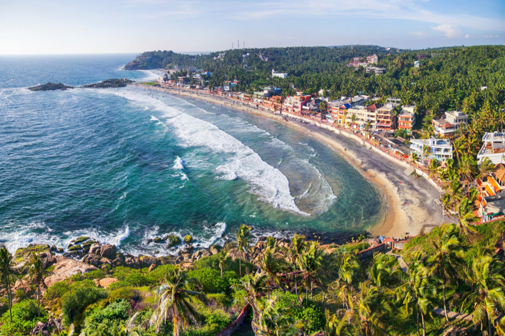
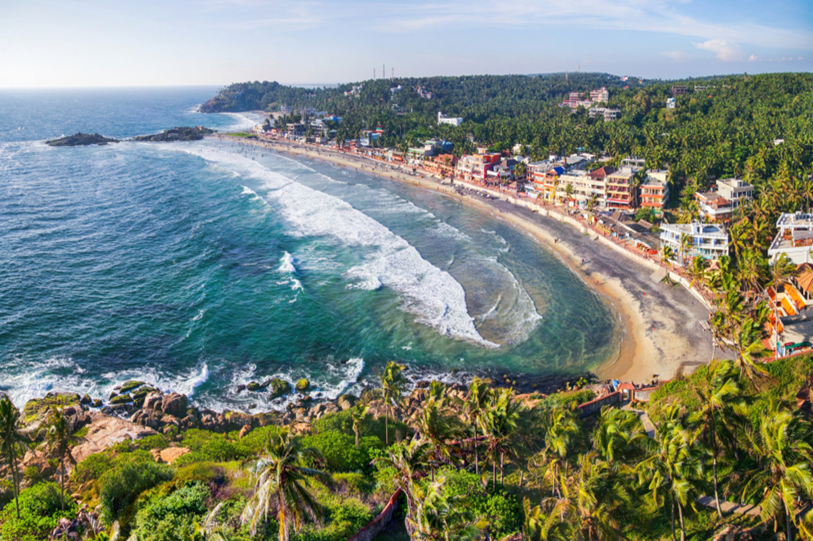

Following in the footsteps of St. Thomas in Kerala takes you on a spiritual journey through historic sites linked to the apostle’s mission in India. Tradition holds that St. Thomas arrived in Kerala in 52 AD, establishing some of the earliest Christian communities. Key locations include:
Kodungallur: Where St. Thomas is believed to have first landed.
Palayur: Home to one of the oldest churches he established.
Malayattoor: A hilltop site where he prayed and performed miracles, now a major pilgrimage destination.
These sites reflect St. Thomas’s profound impact on the region, blending history, faith, and culture in a unique spiritual experience.
Tour Schedule
Day 01 Arrive Delhi
Upon arrival, after clearing immigration and custom, you will be met and transferred to your hotel. (Check-in at 1400hrs)
Overnight at hotel
Day 02 Delhi
After breakfast, Full day city tour of Old & New Delhi
Old Delhi: An ancient walled city. Here you will drive past Red Fort. Raj Ghat, Jama Masjid and Chandni Chowk (Red Fort Closed on Mondays)
Afternoon, visit New Delhi. Humayun’s Tomb, Qutab Minar Continue with a drive through Embassy area,
the Government buildings (1921-1930)
Overnight at hotel
Day 03 Delhi / Agra 205 Kms / 5hrs approx
After the visit, continue your drive to Agra
Upon arrival, check in at your hotel.
Afternoon, visit Taj Mahal and Agra Fort
Taj Mahal (Authority allow max 3hrs to visit Taj Mahal): (TAJ MAHAL CLOSED ON FRIDAYS)
Agra Fort and City
Overnight at hotel
Day 04 Agra / Fatehpur Sikri /Jaipur 235Kms/5hrs 30mins
After breakfast, drive to Jaipur en-route visit Fatehpur Sikri: (the City of Victory) for a tour of this magnificent and world heritage buildings, which are still in a state of perfect preservation.
After the visit, continue your drive to Jaipur.
Upon arrival, check in at your hotel.
Overnight at hotel
Day 05 Jaipur
After breakfast, visit Amber Fort, the former capital of the royal Rajputs..
Afternoon, visit Jaipur City: Hawa Mahal or Palace of the Winds, We proceed for a guided tour of the City Palace & Observatory. Next stop at the City Palace is the Solar Observatory.
Overnight at hotel
Day 06 Jaipur / Bangalore 6E 498 1210hrs /1440hrs
Bangalore / Cochin 6E 6145 1815hrs /1920hrs
After breakfast, transfer to connect your flight for Cochin via Bangalore
Upon arrival you will met and transfer to your hotel
Upon arrival check in to your hotel
Overnight at hotel
Day 07 Cochin / Malayattoor / Trissur/ Kodungallur / Cochin 109Kms / 3hrs one way
After breakfast Excursion Malayattoor.
Malayattoor Church is famous all over the world and thus has been recognized as an international pilgrimage station.
The faithful pilgrims undertake rigorous fasting and carry wooden crosses while undertaking the pilgrimage.
It is believed that St. Thomas an apostle of Jesus had come to this place to spread the Gospel.
Visit St. Thomas Syro-Malabar Catholic Church at Palayur, Guruvayur The church here was built here in the year of 52 AD,
by Thomas the Apostle when he came to visit the Jewish merchants at Palayur which was a stronghold of Brahmins and Jews.
Historical legend records that when St. Thomas landed at Palayur, he witnessed the sight of Hindu Brahmins at the Thaliyakulam
adjacent to the Palayur temple. Offering prayers by chanting mantras to god in
the form of Tharpanam to the Sun god. He performed this miracle and with this miracle
he converted a number of Brahmins and Jews in Palayur to Christianity.
Our next visit is to Marthoma Church, Azhikode ( Kodungallur )
The church is considered to be the first one to be built by St. Thomas
after his arrival to Kodungallur in 52 AD. The church houses the right arm
bone of St. Thomas which was brought from Ortona in Italy.
Continental LUNCH at Chilli Out Café at Cherai Beach.
Later drive to Kottakavu Church, Paravoor situated in the heart of Paravoor. It is believed that the Persian Cross, which is preserved
in the chapel in front of the church, might have been engraved in rock in 880 AD..
Just on a walking distance we can visit Kerala Jews History Museum. One of the oldest such Synagogues is the Paravoor
Synagogue.
After the visit return to Cochin
Evening witness of Kathakali Dance:
A special treat awaits us this evening as we proceed to witness the strength and vigor of Kathakali dance drama,
as it enacts episodes from great Indian epics.
Overnight at hotel
Day 08 Cochin / Munnar 140Kms / 5hrs.
After Breakfast 09:00 am explore the Old part of KOCHI Fort Kochi is a peaceful seaside town in the south – western part of Kochi known for
its old world colonial charm. The place still holds every single cultural change it went through over the centuries.
Begin your exploration with a walking tour that takes you around Fort Kochi, the most historic part of Kochi. Your walking tour shows
you the Chinese Fishing nets are believed to have been introduced in Kochi by Chinese explorer Zheng He.
St. Francis Church originally built in 1503 is the oldest European built church in India.
The mortal remains of Vasco-da-Gama were buried here in 1525. It was taken to Lisbon after 14 years. This church has become a protected monument since 1923.
Explore Mattancherry by Tuk Tuk – The Jewish Quarter where you visit the historic Synagogue ( Closed on Friday afternoon and Saturday ),
Built over 400 years ago it contains beautiful Belgian glass chandeliers and it paved with hand painted tiles from China.
Walk through the narrow street between Pardesi Synagogue and The Dutch Palace.Visit The Dutch Palace (Closed on Fridays ) The Palace was built and gifted by the Portuguese as a present to the king of Cochin around 1545. The palace was built to appease the king after they plundered a temple nearby.
After visit drive to Munnar
On arrival Check In at Hotel. Munnar which is one of the most popular hill stations in india locates 5000ft above sea level
and situated at the confluence of three mountain streams Muthirapuzha, Nallathanni and Kundala.
Overnight at hotel
Day 09 Munnar
After Breakfast proceeds for Eravikulam National Park is one of the most bio-diverse areas of India, the Park is now under
the administration of Department of Forests and Wildlife. Best known as the natural habitat of Nilgiri Tahr.
Tea Museum visit which belongs to TATA Company. Here they demonstrate the different stages of Tea processing and exhibits of
Munnar from its discovery till today ( Tea Museum closed on Monday’s ).
Afternoon, proceed for Srishti Welfare Centre visit ( Closed on Saturday afternoon, Sunday’s & Public Holidays ).
Back to the Hotel.
Overnight at hotel
Day 10 Munnar / Periyar 96Kms / 3hrs
After breakfast, drive to Periyar
Upon arrival, check in to your hotel.
Afternoon, proceed to Nature walk, Different nature trails traversing diverse habitats form the trekking routes,
This is an interpretive programme offering excellent opportunity to watch birds, butterflies and other wildlife.
Overnight at hotel
Day 11 Periyar / Kumarakom 140 Km/5hrs
After breakfast proceed to Kumarakom, Kumarakom is best known for its vast patches of palm trees, coconut groves and paddy fields
which offer mind-blowing scenery to spectators. Kumarakom is an ideal place for birdwatchers, the sanctuary is a seasonal
home to a wide variety of migratory birds and Siberian Cranes can be spotted here once in a while.
Evening a Country Boat cruise – these boats are basically used by the local people for fishing and transporting and later developed as cruise boats.
These boats can pass through the real narrow canals, enable us to show the life & life style of the village people much closer.
Overnight at hotel
Day 12 Kumarakom Kumarakom (Day Cruise on Alleppey) 40Kms / 1hrs 30mins
After breakfast proceed to Alleppey What makes Alleppey different from the rest of the tourist destinations are its House Boats.
House Boats also known as “ Kettuvallam OR Cave Boat “ were earlier the only means of transport from these isolated villages to the cities nearby.
One of the most memorable experiences for any traveller is the opportunity to take a boat journey on the backwaters of Kerala.
Enroute visit a Coir Factory – This is a factory run by laborers manually where you get to witness each step of making coir mats.
LUNCH will be served on board.
Evening disembark House Boat on the banks of Vembanad lake and drive back to Kumarakom.
Overnight at hotel
Day 13 Kumarakom / Cochin 82Kms /3hr approx
Leave Cochin
Morning drive to Kochi International airport to connect your flight back home.


 
